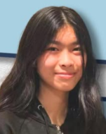
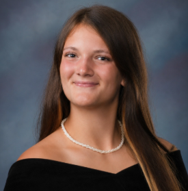
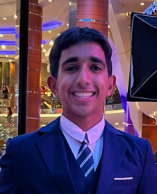
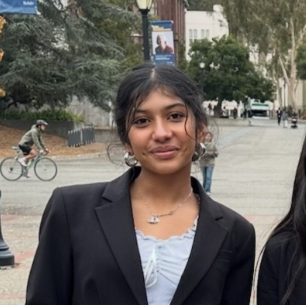

Single Delegate
General Assembly The General Assembly is the largest and most representative committee in an MUN conference. It simulates actual committees at the United Nations. At MMUNC I, our General Assembly committees bring delegates together to debate real global challenges of this year's theme, Global Health Security. Delegates will research their assigned country's policies, negotiate with fellow member states, and draft resolutions that balance national interests with international cooperation. General Assembly committees are a great starting point for delegates new to Model UN. With larger committee sizes and a slower-paced, more structured debate flow, these committees give delegates room to practice public speaking, build confidence in caucusing, and learn the fundamentals of resolution writing.

Hello Delegates! My name is Vanessa, and I am a Junior at Amador Valley High School. I’ve been doing Model UN for 3 years now, and this is my first time chairing. I joined MUN after two horrible years of Speech & Debate, and the freedom behind unmoderated caucuses and resolution writing was a breath of fresh air compared to debate’s evidence-heavy approach. My biggest advice for MUN is to be yourself! While it is important to professionally represent your country, letting a little personality shine through (like using creative hooks) is a great way to give captivating speeches, form blocs, and combat anxiety. Outside of MUN, I love playing video games and watching TV shows (if you are a JJBA fan, please email me!! I’d love to yap about it).
I’m super grateful for this opportunity and I look forward to hearing everyone’s ideas in debate! If you have any questions at all, feel free to contact me: vanessadhuang@gmail.com

Hello! My name is Erin Spratt and I am a Senior at Bella Vista High School. I've been doing MUN since my freshman year and have only chaired a mock conference, so I'm excited to have the chance to watch over all of you. I joined MUN to gain confidence and improve my public speaking, but at each conference I fell more in love with using my knowledge on a niche topic to advocate for my country. I think conferences are the most fun when you are well prepared, and dedicated to doing the best you can for the country you're pretending to represent. For me, an illusion of a greater cause takes pressure off of your own performance and the dynamics of those around you, and lets you focus freely on productive collaboration. A little bit about me is that I do throwing in Track and Field, my favorite event is the hammer, and I like to golf and play pickleball!
You can reach me at erinsprattd.i.y@gmail.com if you need anything!

Hey everyone! My name is Arnav and I am a Senior at American High School. I have been into Model UN since my sophomore year! I have been to many conferences and I am really excited to chair at my first one. A fun fact about me is that I have a Duolingo streak of over 1600 days! My favorite kind of delegates are the ones that lock in during moderated caucasus and have fun hooks! I am also a part of my school’s mock trial team, student council, and speech team (DI/Impromtu stan). Public speaking is definitely a passion of mine and something that I wanted to improve since my freshman year. I used to be nervous going up to every mod, but MUN gave me the confidence to be myself and say what I want. I hope everyone in our committee gets to have the kind of experience that allows them to feel a bit more confident then they came in. Excited to meet you!
Reach out to me at arny.rastogi@gmail.com.

Hi! My name is Archita and I’m a Senior at American High school. I have been in Model UN since sophomore year and participated in around 8 conferences throughout the past 3 years. I’ve only ever been a backroom staff, so I’m excited to chair! I’m so excited to see everyone’s different perspectives on this committee; just remember to be confident, be diplomatic, and align with country policy. I know you will all do great! Outside of MUN, I love painting, ceramics, and basically all things art. I’m also very interested in space, cosmology, and astrophysics.
If you have any questions, feel free to email me: archita.khandelwal@gmail.com.